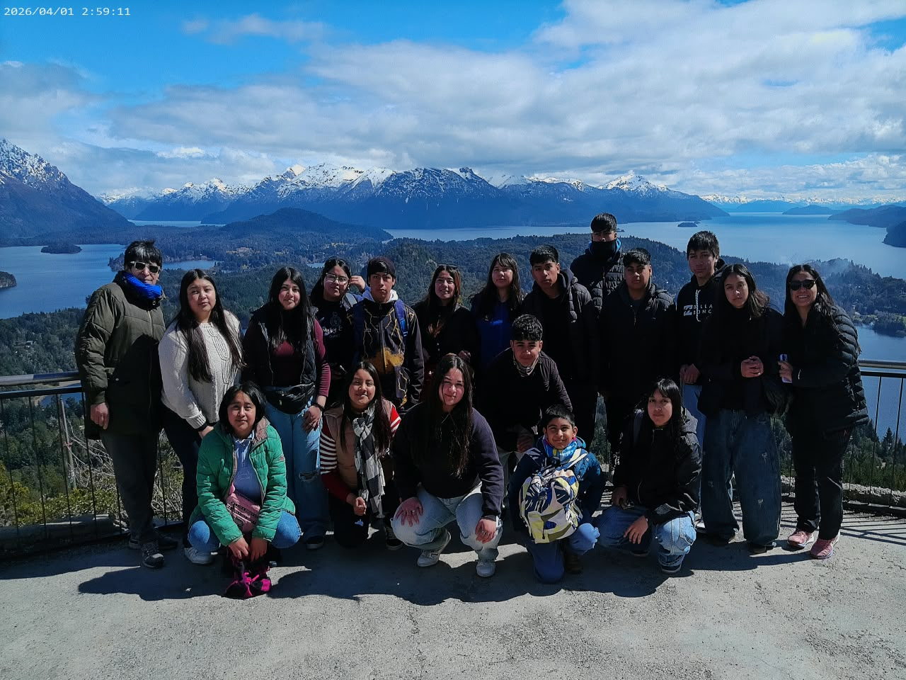

Los estudiantes de la sede El Caín emprendieron un viaje a Bariloche y nos cuentan su experiencia. En este video comparten lo que significó para ellos recorrer nuevos paisajes, compartir días juntos y vivir una salida que quedará en la memoria de todo el grupo.
Compartimos algunas de las fotos que sacamos durante esos días: la salida, el camino, los paisajes y los momentos que vivimos juntos.
Viaje de los estudiantes de El Caín a Bariloche.